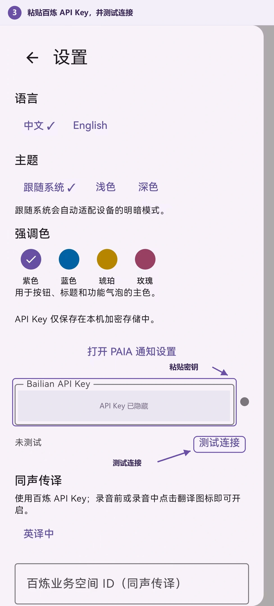
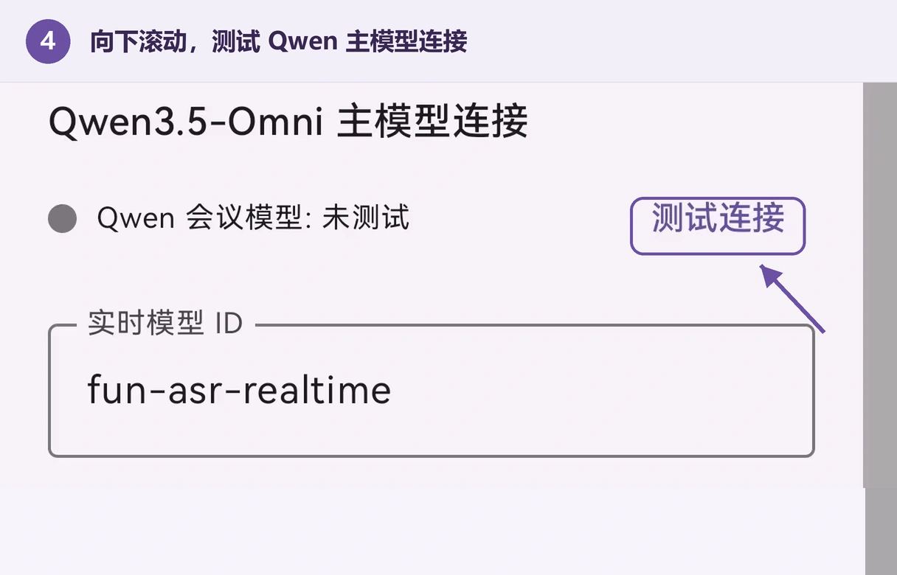
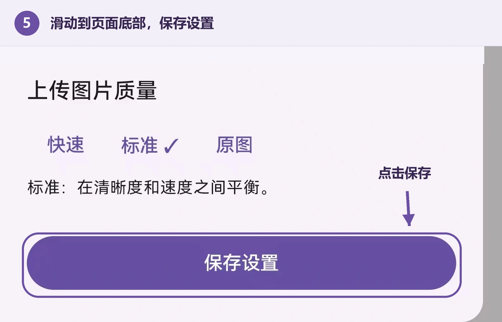

使用教程 / 快速开始
更新于 2026.09.14
快速开始 · 01
在 PAIA 中填写 API Key
连接百炼模型服务，开始使用转写、翻译、会议问答与纪要。
准备好北京地域的百炼 API Key 后，按下列步骤配置。尚未申请密钥，可先阅读申请百炼 API Key。GPT 密钥为可选配置，初次使用可以留空。
- 打开侧栏
- 进入设置
- 填写并测试
- 保存设置
3粘贴百炼密钥
找到 Bailian API Key，粘贴完整密钥，再点击其下方的“测试连接”。这项测试验证实时转写连接。

密钥区域已作隐私遮盖
4验证会议模型
继续向下找到“主模型连接”，点击这一项的“测试连接”，验证提问和纪要使用的模型。两项测试需要分别进行。

主模型名称以安装版本显示为准
5保存设置
滑动到设置页最底部，点击紫色的“保存设置”按钮。保存后再回到会话页面。
测试成功不会代替保存。直接点击返回，刚填写的配置不会保存。

设置页最底部
图示保留通知栏以下的完整手机界面；顶部系统状态栏已裁除，个人会话及密钥信息已遮盖。点击图片可查看整屏，继续点击可放大查看细节。不同版本的界面文字可能略有差异。
快速开始 · 02
申请百炼 API Key
在阿里云百炼创建自己的模型调用凭证，再将其填入 PAIA。
API Key 用于验证模型调用身份，调用费用计入该密钥所属的阿里云账号。申请与管理在百炼控制台完成。
登录百炼控制台
打开阿里云百炼控制台，登录阿里云账号。首次使用时，按控制台提示完成账号认证与服务开通。
选择华北 2（北京）地域
在控制台右上角切换地域，选择华北 2（北京）。本教程对应的 PAIA 版本使用北京地域的百炼接口；其他地域创建的密钥不能直接混用。
打开 API Key 管理
进入北京地域的 API Key 页面，点击“创建 API Key”。若已有可用密钥，也可直接复制。
选择归属账号与业务空间
个人初次使用可选择自己的主账号与默认业务空间。如使用团队空间，由管理员确认模型调用权限；若设置自定义权限，需包含 PAIA 使用的语音与主模型服务。
创建并复制
确认创建后，点击密钥旁的复制图标，回到 PAIA 的 Bailian API Key 输入框粘贴。按填写教程完成测试与保存。
密钥与业务空间 ID 的区别
两者不能互相替代，也不应填写阿里云登录密码或 AccessKey ID。完整 API Key 仅填写到 PAIA 设置中，不要发送到反馈、聊天或公开截图中。
快速开始 · 03
连接验证与业务空间
分别验证模型连接，让每项功能使用正确的配置。
两处“测试连接”分别验证什么？
灰色表示尚未测试；测试时显示连接状态，成功或失败后会显示对应提示和状态颜色。转写测试通过，不代表主模型或同声传译也已验证。修改密钥或模型后，应重新测试并保存设置。
填写同声传译的业务空间 ID
- 登录百炼控制台，确认地域为北京。
- 在当前业务空间信息或“业务空间管理”中，复制所选空间的 Workspace ID（业务空间 ID）。
- 回到 PAIA 设置，粘贴到“百炼业务空间 ID（同声传译）”。
- 确认该空间与 API Key 对应，选择翻译方向，然后滚动到底部保存设置。
业务空间 ID 是控制台分配的标识，不能自行填写空间名称、模型名称或手机号码。
完成一次简短的功能检查
返回主界面，开始一段短录音并说一句话，确认转写有内容。再打开翻译，说一句源语言，检查是否产生目标语言文字。最后发送一个简短问题，验证主模型是否能回答。
录音与协作
开始、暂停与继续录音
在同一个会话中记录完整的课程或会议。
开始一段录音
点击主界面底部中央的开始按钮。首次使用时，按系统提示允许麦克风权限；通知权限用于显示录音和后台任务状态。未配置密钥时仍可本地录音，在线转写、翻译和模型回答则需要对应配置。
暂停后继续
录音过程中再次点击中央按钮暂停。留在当前会话，点击开始即可继续记录，多段音频会归入同一会话。暂停录音不会自动生成会议纪要。
长录音与后台处理
音频会分段保存在本机，已完成的片段可在后台生成摘要索引，帮助之后的提问定位内容。预处理需要可用网络与百炼配置，长会话的处理时间和费用会随内容增加。
应用通过前台服务维持录音与后台任务。若系统限制后台运行，请在系统应用设置中检查 PAIA 的通知权限与电池管理权限；不同系统的入口名称可能不同。
录音前的准备
确认设备有足够空间，麦克风未被其他应用占用，并取得现场参与者的录音许可。重要内容建议在录音后及时导出音频。
录音与协作
实时转写与同声传译
跟随现场内容阅读原文与译文，两个模块可独立开关。
实时转写
点击底部“转写”按钮启用。录音开始后，识别文字会持续写入转写气泡。关闭时保留已有内容，再次开启后从重新启用时的音频继续处理，不自动补写关闭期间的内容。
同声传译
先在设置中完成百炼密钥与业务空间配置，选择翻译方向并保存。点击“翻译”按钮后，译文会出现在独立气泡中；录音前和录音中均可开关。
默认方向为英译中。需要汉译英时，在同声传译设置中切换方向并保存，再核对气泡状态。
折叠与复制
使用气泡右上角的折叠按钮收起长文本。转写和翻译折叠后保留末尾几行，便于关注最新内容；展开可阅读全文，复制按钮可复制气泡文字。
录音与协作
中途提问与现场笔记
同一个输入框，可以提问，也可以保存与现场时间关联的笔记。
在录音中提问
确认底部模式按钮显示“提问”，在输入框输入问题并点击发送。例如：“刚才这一部分的主要结论是什么？”提问会打开独立回答气泡，录音继续进行。
模型结合当前会话的音频摘要、相关音频片段、图片与笔记回答。询问当前进度时，建议明确写“刚才”或“最近这一段”；也可以在未录音时直接进行普通文字对话。
切换为笔记
点击底部“提问”模式按钮，切换为“笔记”。输入框显示“在此键入笔记”后，发送的内容会保存为笔记，不立即请求模型回答。再次点击按钮可切回提问。
笔记会记录提交时间，便于后续回答与纪要参考当时的上下文。时间记录用于辅助理解，不代表每张照片都已精确对齐到某一秒音频。
附上现场照片
点击输入框左侧相机按钮拍照，可连续添加多张。发送前在输入框上方检查预览，移除不需要的照片后再发送。提问和笔记两种模式都可以附图。
修改与重新回答
提问气泡右上角的编辑按钮可修改问题并调整图片。回答气泡右上角的重新生成按钮会使用当前可用的会话上下文再次回答。长按笔记或用户提问气泡，可删除对应内容并将其移出后续上下文。
录音与协作
生成会议纪要
将会话中的讨论、照片和笔记整理为可回顾的记录。
- 先暂停录音并等待音频保存完成，确认内容已记录在当前会话中。
- 点击底部“纪要”按钮，界面会显示纪要气泡和处理状态。
- 等待音频片段处理与模型输出，阅读生成的结论、要点和待办事项。
- 有新内容时，再次点击“纪要”或使用气泡的重新生成按钮，更新这份纪要。
纪要使用哪些资料？
纪要结合当前会话保存的音频、音频摘要、笔记与图片。模型可能进一步读取相关音频片段，转写气泡不是生成纪要的前置条件。
等待期间
长录音可能需要先处理多个音频片段。后台服务会继续执行任务，但应允许应用后台运行并保持网络可用。气泡的状态文字可用于区分音频处理与模型回答阶段。
核对后使用
生成内容可折叠、展开和复制。人物、数字、专业结论及行动项应结合原始资料确认；再次生成会替换原纪要内容，需保留旧稿时可先复制。
资料管理
历史会话与文件夹
按课程、项目或会议主题组织现场资料。
创建和切换会话
打开左上角侧栏，点击顶部加号创建新会话。点击历史会话可继续查看或提问；当前会话标题显示在主界面顶部。
重命名与删除
长按历史会话，可以手动修改标题或删除会话。纪要生成后可自动生成标题，手动名称便于按自己的方式整理。
使用文件夹
点击侧栏顶部的文件夹加号创建文件夹。通过会话的长按菜单，将现有会话复制到指定文件夹，再点击文件夹查看分类后的记录。
查看空间占用
历史会话下方的灰色文字显示其媒体和记录的空间占用估计。删除会话会清理不再被其他会话引用的关联媒体；共享资料可能仍由其他会话保留。
资料管理
查看原始资料，并将重要内容保存到应用之外。
查看与保存照片
点击气泡中的照片进入全屏查看。左右滑动可浏览整个会话中的照片，两指缩放可查看细节。点击保存按钮，将当前原图保存到本地相册，并留意图片查看界面的保存结果提示。
选择上传画质
设置中的“上传图片质量”控制模型请求使用的图片版本，不改变本地拍摄原图。普通场景可用“标准”；图表、公式或小字需要更高细节时可选择“原图”，但上传和响应可能更慢。
导出会话音频
先暂停录音并等待保存完成，再点击主界面标题栏右上角的导出按钮。已保存的音频分段会导出到设备的 Download/PAIA 文件夹，可通过文件管理器查看。
当前应用内直接导出需要 Android 10 或以上版本。多段录音会分别导出，不会自动合并为一个文件；正在录制且尚未保存的片段不在导出范围内。
设置与帮助
外观与存储设置
根据阅读习惯和录音时长调整 PAIA。
语言、主题和强调色
在设置中选择中文或 English。主题支持跟随系统、浅色和深色；强调色可选择紫色、蓝色、琥珀或玫瑰。修改后点击底部“保存设置”。
功能文字标签
初次使用建议保留“显示功能文字标签”，以便区分转写、翻译、纪要和提问 / 笔记。熟悉图标后可在设置中关闭文字。
录音质量
实际格式和预计占用以设置页面为准。低质量档位对嘈杂环境、远距离发言的识别可能更不利；可先用现场环境短录测试。修改设置不会重新压缩已有录音。
上传图片质量
“快速”减少上传数据，“标准”兼顾细节与速度，“原图”保留更多视觉信息。这项设置不降低保存在设备上的原图质量。
调试模式
开启后，功能气泡标题会显示当前调用的模型，方便区分主模型与被调度的模型。模型由任务和可用配置决定，调试模式本身不会提高回答准确性。
设置与帮助
更新与问题反馈
从“关于”查看新版本、访问官网或提交使用反馈。
更新应用
- 打开左上角侧栏，点击底部的“关于”。
- 查看更新一栏。有新版本时开始下载安装包；下载进度支持点击暂停或继续。
- 下载完成后，点击该项启动系统安装，按提示允许 PAIA 安装更新。
使用官方提供的兼容更新包直接覆盖安装，可保留当前本机记录。更新前不要卸载旧版。安装遇到签名或版本不兼容时，应先保留原应用与重要资料，再反馈问题。
在应用内发送反馈
进入“关于 → 反馈 bug & 建议”，填写遇到的问题并点击发送。看到发送成功后，反馈会进入项目的私有反馈仓库，发布者可查看处理。
建议包含触发步骤、预期结果、实际表现与错误文字。反馈可能附带应用版本、系统和设备诊断信息，不要填写 API Key 或私人会议内容。
访问官网
在“关于”中点击“官网”，系统会使用浏览器打开 PAIA 网站，可查看版本信息和本使用教程。
填了密钥，为什么返回后仍提示未设置？
请确认在设置页最底部点击了“保存设置”。测试连接只验证配置，不会代替保存。
必须同时配置百炼与 GPT 密钥吗？
不需要。百炼是语音和默认主模型使用的配置，GPT 为可选项。未配置 GPT 时，可由百炼侧的可用专家模型协作处理。
转写测试成功，但提问失败怎么办？
两者使用不同接口。请运行“主模型连接”对应的测试，并检查密钥地域、模型权限、额度以及主模型名称是否仍可用。
业务空间 ID 可以留空吗？
本版本的同声传译需要这一项；先使用录音、转写或问答时，不必为了这些功能随意填写。需要翻译时，请从百炼复制与 API Key 对应的北京地域业务空间 ID。
关闭转写后还能生成纪要吗？
可以。转写是独立的阅读功能，会议问答和纪要使用音频及其摘要、笔记与图片上下文。
为什么长录音处理需要等待？
会话中的音频需要分段处理，尚未完成的摘要、相关片段读取、图片上传和模型生成都会影响时间。保持网络可用，并留意气泡中的任务状态。
网页与应用中的模型名称不同怎么办？
截图用于定位功能入口。模型可用性会随版本和服务商调整，以安装版本和百炼控制台为准；不要仅为了与截图一致而修改模型 ID。
删除或卸载后，数据能恢复吗？
会话默认保存在本机。删除会话或卸载可能清除对应数据，现阶段不能依赖云端自动恢复。请先导出重要音频并保存所需照片和文字。
{kind=link}
{kind=link}
{kind=link}
{kind=link}
{kind=link}